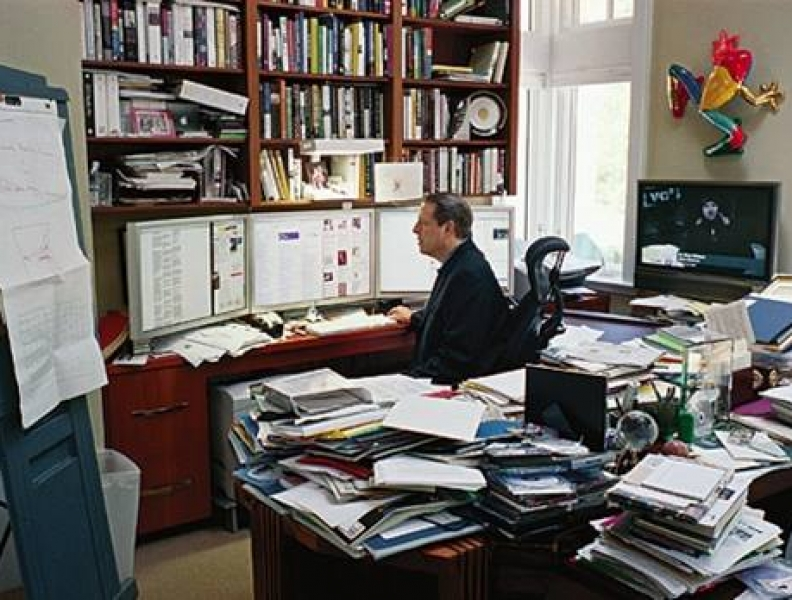

Los principales riesgos del trabajo en oficina
Cuando pensamos en riesgos de trabajo, a nuestra mente llegan inmediatamente imágenes de cascos de la industria de la minería, construcción o cualquier tipo de trabajo pesado o con mayor peligro, creemos que por trabajar en una “Inofensiva” oficina estamos exentos de algún accidente, sin embargo no estamos a salvo de situaciones que pueden causar daños a nuestra salud, daños que pueden ser desde moderados hasta mortales, a continuación te presentamos Los 5 Principales Riesgos del Trabajo en oficina:
-
1. Golpes y caídas.
Uno de cada 3 accidentes en la oficina ocurre por golpes o caídas que derivan en fracturas o traumatismos, la principal causa de estos accidentes es un mal orden en el lugar de trabajo, cajas amontonadas, equipo de oficina obsoleto, archivo muerto, convierten la oficina en un riesgo latente para este tipo de accidentes.
-
2. Cortes y rasgaduras.
Los cortes y rasgaduras son un riesgo muy común en la oficina, cuters, engrapadoras, abrecartas, y materiales con filo o punzocortantes se encuentran por todo el lugar.
-
3. Accidentes con estantería y puertas.
Puertas muy pesadas que se regresan contra tu cuerpo, puertas de cristal que pierden visibilidad, estantería sobresaturada y mal organizada que podría caerse en cualquier momento son riesgos comunes y que pasan desapercibidos.
-
4. Fatiga de postura y mental
Trabajar en una mala postura y sobresaturarse de tareas pueden derivar en una fatiga de postura y mental que puede ser muy peligrosa para la salud.
-
5. Descargas eléctricas e incendios
Multicontactos en mal estado, sobrecargas de energía, cables rotos y sueltos, enchufes y la manipulación de aparatos eléctricos con las manos mojadas o húmedas pueden ser mortales. El no contar con las señales de emergencia en buen estado genera mas riesgos de lo que nos imaginamos.
Después de conocer estos 5 puntos principales de riesgo en la oficina analiza cuantos accidentes pueden evitarse en tu oficina, y si el articulo te gustó, ¡Comparte!